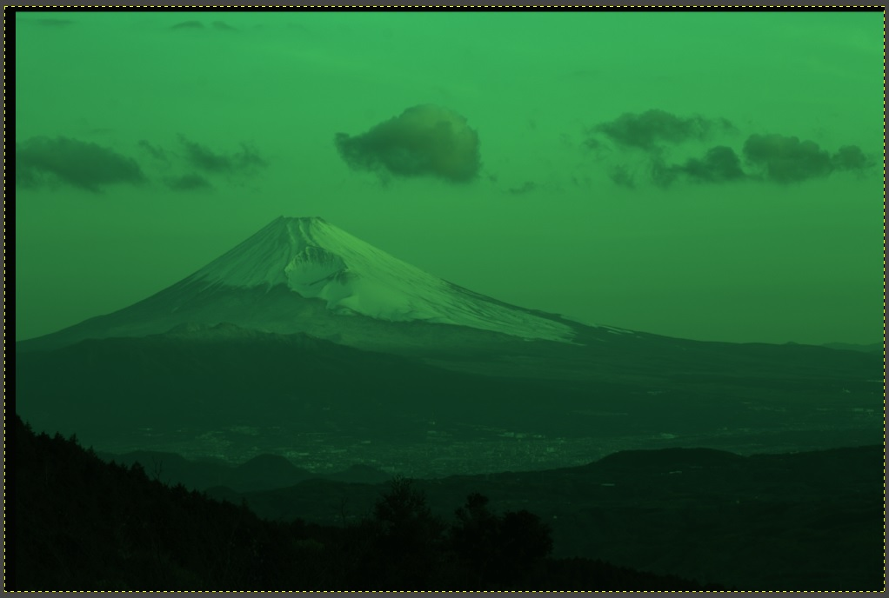
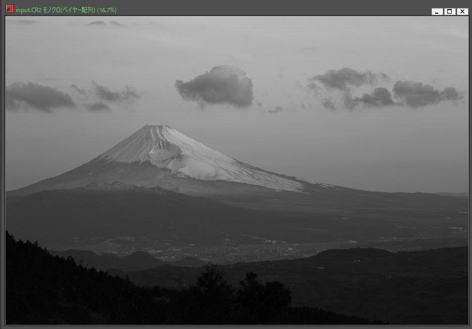
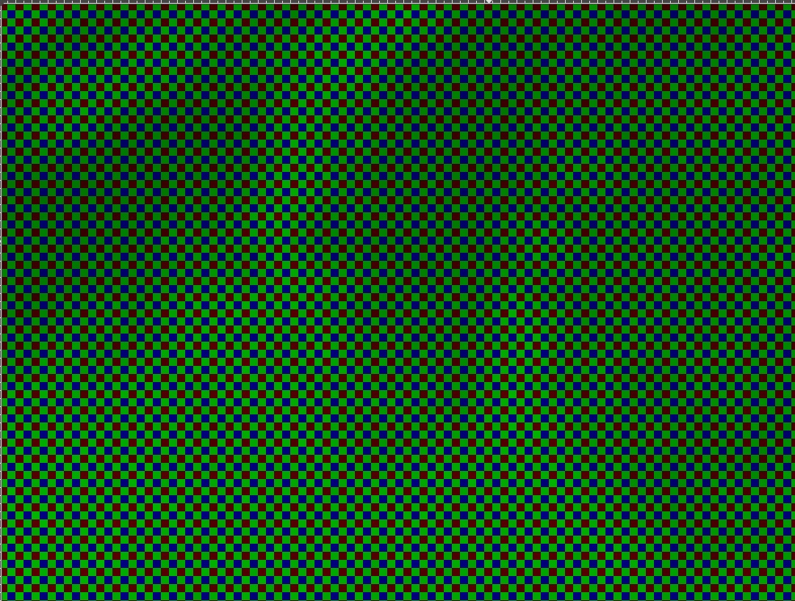

<!DOCTYPE html>
<html>

<head><meta name="generator" content="Hexo 3.8.0">
  <meta charset="utf-8">
  
  <title>Rustのrawloader Crateを使ってみる | ほしよみ大学生のブログ</title>
  <meta name="viewport" content="width=device-width">
  <meta name="description" content="あいさつこんにちは．最近の新月期の土日はなかなかぱっとしない天気ですね．こんな時は遠征記でも書きたいのですが，タイミング的にまだ違うと思ったので，代わりの記事になります．今流行り（？）のRustを使った小ネタです．">
<meta name="keywords" content="写真,画像処理,カメラ,Rust">
<meta property="og:type" content="article">
<meta property="og:title" content="Rustのrawloader Crateを使ってみる">
<meta property="og:url" content="http://dabokun.github.io/2019/06/04/00000009-rust-raw-loader-crate/index.html">
<meta property="og:site_name" content="ほしよみ大学生のブログ">
<meta property="og:description" content="あいさつこんにちは．最近の新月期の土日はなかなかぱっとしない天気ですね．こんな時は遠征記でも書きたいのですが，タイミング的にまだ違うと思ったので，代わりの記事になります．今流行り（？）のRustを使った小ネタです．">
<meta property="og:locale" content="ja">
<meta property="og:image" content="http://dabokun.github.io/2019/06/04/00000009-rust-raw-loader-crate/card.jpg">
<meta property="og:updated_time" content="2019-06-04T10:06:39.073Z">
<meta name="twitter:card" content="summary">
<meta name="twitter:title" content="Rustのrawloader Crateを使ってみる">
<meta name="twitter:description" content="あいさつこんにちは．最近の新月期の土日はなかなかぱっとしない天気ですね．こんな時は遠征記でも書きたいのですが，タイミング的にまだ違うと思ったので，代わりの記事になります．今流行り（？）のRustを使った小ネタです．">
<meta name="twitter:image" content="http://dabokun.github.io/2019/06/04/00000009-rust-raw-loader-crate/card.jpg">
<meta name="twitter:creator" content="@dabo_pic">
  
  <link rel="alternative" href="/atom.xml" title="ほしよみ大学生のブログ" type="application/atom+xml">
  
  
  <link rel="icon" href="/images/favicon.png">
  
  <link rel="stylesheet" href="/css/style.css">
  <!--[if lt IE 9]><script src="//html5shiv.googlecode.com/svn/trunk/html5.js"></script><![endif]-->
  
</head></html>
<body>
  <div id="container">
    <div class="mobile-nav-panel">
	<i class="icon-reorder icon-large"></i>
</div>
<header id="header">
	<h1 class="blog-title">
		<a href="/">ほしよみ大学生のブログ</a>
	</h1>
	<nav class="nav">
		<ul>
			<li><a href="/">Home</a></li><li><a href="/categories">Categories</a></li><li><a href="/tags">Tags</a></li><li><a href="/archives">Archives</a></li><li><a href="/about">About</a></li><li><a href="/work">Work</a></li>
			<li><a id="nav-search-btn" class="nav-icon" title="Search"></a></li>
			<li><a href="https://github.com/dabokun"></a>
			</li>
			<li><a href="https://twitter.com/dabo_pic"></a></li>
			<li><a href="/atom.xml" id="nav-rss-link" class="nav-icon" title="RSS Feed"></a>
			</li>
		</ul>
	</nav>
	<div id="search-form-wrap">
		<form action="//google.com/search" method="get" accept-charset="UTF-8" class="search-form"><input type="search" name="q" class="search-form-input" placeholder="Search"><button type="submit" class="search-form-submit">&#xF002;</button><input type="hidden" name="sitesearch" value="http://dabokun.github.io"></form>
	</div>
</header>
    <div id="main">
      <article id="post-00000009-rust-raw-loader-crate" class="post">
	<footer class="entry-meta-header">
		<span class="meta-elements date">
			<a href="/2019/06/04/00000009-rust-raw-loader-crate/" class="article-date">
  <time datetime="2019-06-04T10:06:01.000Z" itemprop="datePublished">2019-06-04</time>
</a>
		</span>
		<span class="meta-elements author">astr0dab0</span>
		<div class="commentscount">
			
			<a href="http://dabokun.github.io/2019/06/04/00000009-rust-raw-loader-crate/#disqus_thread" class="article-comment-link">Comments</a>
			
		</div>
	</footer>
	
	<header class="entry-header">
		
  
    <h1 class="article-title entry-title" itemprop="name">
      Rustのrawloader Crateを使ってみる
    </h1>
  

	</header>
	<div class="entry-content">
		
		
		<div id="toc" class="toc-article">
			<p class="toc-title">目次</p>
			<ol class="toc"><li class="toc-item toc-level-3"><a class="toc-link" href="#あいさつ"><span class="toc-number">1.</span> <span class="toc-text">あいさつ</span></a></li><li class="toc-item toc-level-3"><a class="toc-link" href="#Rustとは"><span class="toc-number">2.</span> <span class="toc-text">Rustとは</span></a></li><li class="toc-item toc-level-3"><a class="toc-link" href="#rawloader-Crateとは"><span class="toc-number">3.</span> <span class="toc-text">rawloader Crateとは</span></a></li><li class="toc-item toc-level-3"><a class="toc-link" href="#実際にRawを読んでみる"><span class="toc-number">4.</span> <span class="toc-text">実際にRawを読んでみる</span></a></li><li class="toc-item toc-level-3"><a class="toc-link" href="#使い方"><span class="toc-number">5.</span> <span class="toc-text">使い方</span></a></li><li class="toc-item toc-level-3"><a class="toc-link" href="#結果"><span class="toc-number">6.</span> <span class="toc-text">結果</span></a></li><li class="toc-item toc-level-3"><a class="toc-link" href="#TODO-デモザイクもしてみる"><span class="toc-number">7.</span> <span class="toc-text">TODO! デモザイクもしてみる</span></a></li></ol>
		</div>
		
		<h3 id="あいさつ"><a href="#あいさつ" class="headerlink" title="あいさつ"></a>あいさつ</h3><p>こんにちは．最近の新月期の土日はなかなかぱっとしない天気ですね．こんな時は遠征記でも書きたいのですが，タイミング的にまだ違うと思ったので，代わりの記事になります．今流行り（？）のRustを使った小ネタです．</p>
<a id="more"></a>
<h3 id="Rustとは"><a href="#Rustとは" class="headerlink" title="Rustとは"></a>Rustとは</h3><p>Rustについて言及するのはこのブログでは初めてですが，<a href="https://www.rust-lang.org/" target="_blank" rel="noopener">Rust</a>とは，FireFox等を開発するMozillaによる比較的新しいプログラミング言語です．メモリ安全性，C,C++等の言語が吐くバイナリに匹敵する速度，安全性によってもたらされる並行性などに焦点をあてながら開発されており，現在人気の高いプログラミング言語の一つになっています．実は私の研究で開発に携わっているフレームワークはこの言語で開発されています．</p>
<h3 id="rawloader-Crateとは"><a href="#rawloader-Crateとは" class="headerlink" title="rawloader Crateとは"></a>rawloader Crateとは</h3><p>Crateというのは他の言語でいうところのライブラリのようなものです．crates.ioというページで公開されていて，このCrateがあることで，プログラムの依存ライブラリの管理が容易になっています．その中で，rawloader crateはその名の通り，様々なカメラ製品から出力されるRaw画像や，付随するメタデータを読み込むためのライブラリです．著作権は<a href="https://github.com/pedrocr" target="_blank" rel="noopener">pedrocr氏</a>にあります．Python等でも同様のライブラリはあるようですが，Rustではこれくらいしかなさそうなので，実際に読み込んで遊んでみたいと思います．</p>
<h3 id="実際にRawを読んでみる"><a href="#実際にRawを読んでみる" class="headerlink" title="実際にRawを読んでみる"></a>実際にRawを読んでみる</h3><p>githubにあるサンプルプログラム通りに書いてみますが，自分の場合Canon EOS 6Dから出力されるRaw画像を扱うので，ほんのちょっと工夫が必要です．<br>以下がプログラムです．</p>
<figure class="highlight rust"><table><tr><td class="gutter"><pre><span class="line">1</span><br><span class="line">2</span><br><span class="line">3</span><br><span class="line">4</span><br><span class="line">5</span><br><span class="line">6</span><br><span class="line">7</span><br><span class="line">8</span><br><span class="line">9</span><br><span class="line">10</span><br><span class="line">11</span><br><span class="line">12</span><br><span class="line">13</span><br><span class="line">14</span><br><span class="line">15</span><br><span class="line">16</span><br><span class="line">17</span><br><span class="line">18</span><br><span class="line">19</span><br><span class="line">20</span><br><span class="line">21</span><br><span class="line">22</span><br><span class="line">23</span><br><span class="line">24</span><br><span class="line">25</span><br><span class="line">26</span><br><span class="line">27</span><br><span class="line">28</span><br><span class="line">29</span><br><span class="line">30</span><br><span class="line">31</span><br><span class="line">32</span><br><span class="line">33</span><br><span class="line">34</span><br><span class="line">35</span><br><span class="line">36</span><br><span class="line">37</span><br><span class="line">38</span><br><span class="line">39</span><br><span class="line">40</span><br><span class="line">41</span><br><span class="line">42</span><br><span class="line">43</span><br><span class="line">44</span><br><span class="line">45</span><br><span class="line">46</span><br><span class="line">47</span><br><span class="line">48</span><br><span class="line">49</span><br><span class="line">50</span><br><span class="line">51</span><br><span class="line">52</span><br></pre></td><td class="code"><pre><span class="line"><span class="comment">// main.rs</span></span><br><span class="line"><span class="comment">// c.f. https://github.com/pedrocr/rawloader</span></span><br><span class="line"><span class="keyword">use</span> std::env;</span><br><span class="line"><span class="keyword">use</span> std::fs::File;</span><br><span class="line"><span class="keyword">use</span> std::io::prelude::*;</span><br><span class="line"><span class="keyword">use</span> std::io::BufWriter;</span><br><span class="line"></span><br><span class="line"><span class="keyword">extern</span> <span class="keyword">crate</span> rawloader;</span><br><span class="line"></span><br><span class="line"><span class="function"><span class="keyword">fn</span> <span class="title">main</span></span>() &#123;</span><br><span class="line">    <span class="keyword">let</span> args: <span class="built_in">Vec</span>&lt;_&gt; = env::args().collect();</span><br><span class="line">    <span class="keyword">if</span> args.len() != <span class="number">2</span> &#123;</span><br><span class="line">        <span class="built_in">println!</span>(<span class="string">"Usage: &#123;&#125; [file]"</span>, args[<span class="number">0</span>]);</span><br><span class="line">        std::process::exit(<span class="number">2</span>);</span><br><span class="line">    &#125;</span><br><span class="line">    <span class="keyword">let</span> file = &amp;args[<span class="number">1</span>];</span><br><span class="line">    <span class="keyword">let</span> image = rawloader::decode_file(file).unwrap();</span><br><span class="line">    <span class="built_in">println!</span>(<span class="string">"&#123;&#125;"</span>, image.make);</span><br><span class="line">    <span class="built_in">println!</span>(<span class="string">"&#123;&#125;"</span>, image.model);</span><br><span class="line">    <span class="built_in">println!</span>(<span class="string">"&#123;&#125;, &#123;&#125;"</span>, image.width, image.height);</span><br><span class="line">    <span class="built_in">println!</span>(<span class="string">"&#123;&#125;"</span>, image.cpp);</span><br><span class="line"></span><br><span class="line">    <span class="keyword">let</span> <span class="keyword">mut</span> f = BufWriter::new(File::create(<span class="built_in">format!</span>(<span class="string">"&#123;&#125;.ppm"</span>, file)).unwrap());</span><br><span class="line">    <span class="keyword">let</span> preamble = <span class="built_in">format!</span>(<span class="string">"P3\n&#123;&#125; &#123;&#125;\n&#123;&#125;\n"</span>, image.width, image.height, <span class="number">16383</span>).into_bytes(); <span class="comment">//.CR2 -&gt; 14bit</span></span><br><span class="line">    f.write_all(&amp;preamble).unwrap();</span><br><span class="line">    <span class="keyword">let</span> <span class="keyword">mut</span> counter = <span class="number">0</span>;</span><br><span class="line">    <span class="keyword">if</span> <span class="keyword">let</span> rawloader::RawImageData::Integer(data) = image.data &#123;</span><br><span class="line">        <span class="keyword">for</span> pix <span class="keyword">in</span> data &#123;</span><br><span class="line">            <span class="comment">// interpret data as RG/GB Bayer Array</span></span><br><span class="line">            <span class="keyword">if</span> (counter / image.width) % <span class="number">2</span> == <span class="number">0</span> &#123;</span><br><span class="line">                <span class="keyword">if</span> (counter - (counter / image.width) * image.width) % <span class="number">2</span> == <span class="number">0</span> &#123;</span><br><span class="line">                    <span class="keyword">let</span> d = <span class="built_in">format!</span>(<span class="string">"&#123;&#125; 0 0\n"</span>, pix).into_bytes();</span><br><span class="line">                    f.write_all(&amp;d).unwrap();</span><br><span class="line">                &#125; <span class="keyword">else</span> &#123;</span><br><span class="line">                    <span class="keyword">let</span> d = <span class="built_in">format!</span>(<span class="string">"0 &#123;&#125; 0\n"</span>, pix).into_bytes();</span><br><span class="line">                    f.write_all(&amp;d).unwrap();</span><br><span class="line">                &#125;</span><br><span class="line">            &#125; <span class="keyword">else</span> &#123;</span><br><span class="line">                <span class="keyword">if</span> (counter - (counter / image.width) * image.width) % <span class="number">2</span> == <span class="number">0</span> &#123;</span><br><span class="line">                    <span class="keyword">let</span> d = <span class="built_in">format!</span>(<span class="string">"0 &#123;&#125; 0\n"</span>, pix).into_bytes();</span><br><span class="line">                    f.write_all(&amp;d).unwrap();</span><br><span class="line">                &#125; <span class="keyword">else</span> &#123;</span><br><span class="line">                    <span class="keyword">let</span> d = <span class="built_in">format!</span>(<span class="string">"0 0 &#123;&#125;\n"</span>, pix).into_bytes();</span><br><span class="line">                    f.write_all(&amp;d).unwrap();</span><br><span class="line">                &#125;</span><br><span class="line">            &#125;</span><br><span class="line">            counter += <span class="number">1</span>;</span><br><span class="line">        &#125;</span><br><span class="line">    &#125; <span class="keyword">else</span> &#123;</span><br><span class="line">        eprintln!(<span class="string">"Don't know how to process non-integer raw files"</span>);</span><br><span class="line">    &#125;</span><br><span class="line">&#125;</span><br></pre></td></tr></table></figure>
<p>if let rawloader::RawImageData::Integer(data) = image.data<br>で画像データ(image.data)を新しいデータ(data)に束縛しています．image.dataの型はrawloader::RawImageDataで，これをInteger(Vec&lt;u16&gt;)と解釈します．なのでInteger(data)のdataの型はVec&lt;u16&gt;ですね．他にも，ドキュメンテーションを見るとRawImageDataはFloat(Vec&lt;f32&gt;)もサポートしているっぽいです．<br>6Dのデータは14bitなので，1画素あたり0～16383までの値が16bitのメモリ領域に収まっています．あとはこれをベイヤー配列の色(RG/GB)に変換して，書き出しています．もしこれを単に値として書き出して，プリアンブル部をP3からP2(グレースケール)とすれば単に輝度のモノクロベイヤー配列が得られるでしょう．出力形式は今のところ理解しやすいようにテキスト(PNMフォーマット)なので容量はめっちゃ増えます(20MB→100MBくらい)．</p>
<h3 id="使い方"><a href="#使い方" class="headerlink" title="使い方"></a>使い方</h3><p>ビルドして，<br><figure class="highlight plain"><table><tr><td class="gutter"><pre><span class="line">1</span><br></pre></td><td class="code"><pre><span class="line">$ [binary file] [raw file]</span><br></pre></td></tr></table></figure></p>
<p>しばらく待つと[raw file].ppmができます．</p>
<h3 id="結果"><a href="#結果" class="headerlink" title="結果"></a>結果</h3><p>テキトーなRawを突っ込んでGIMPで開いてみました．いい感じですね．</p>
<p>GIMP（上記プログラムから吐かれた.ppmファイル）<br><br>一つわからないのが，画像左と上に謎の暗部ができてしまっていることです．どうやら上記プログラムでサイズ（image.widthとimage.height）が正しく読めていないっぽいのですが，理由がよくわかりません．</p>
<p>SI8（元の.CR2ファイル）<br></p>
<p>ベイヤー(GIMPで開いた画像を拡大)<br></p>
<p>ちゃんとベイヤー配列も得られていることがわかりますね．</p>
<h3 id="TODO-デモザイクもしてみる"><a href="#TODO-デモザイクもしてみる" class="headerlink" title="TODO! デモザイクもしてみる"></a>TODO! デモザイクもしてみる</h3><p>ベイヤーデータが得られたのでデモザイキングをすればカラー画像に変換できそうです．今後やってみたいと思います．</p>

		
	</div>
	<footer class="article-footer">
		<a href="https://twitter.com/intent/tweet?text=Rust%E3%81%AErawloader%20Crate%E3%82%92%E4%BD%BF%E3%81%A3%E3%81%A6%E3%81%BF%E3%82%8B｜%E3%81%BB%E3%81%97%E3%82%88%E3%81%BF%E5%A4%A7%E5%AD%A6%E7%94%9F%E3%81%AE%E3%83%96%E3%83%AD%E3%82%B0&url=http://dabokun.github.io/2019/06/04/00000009-rust-raw-loader-crate/" class="twitter-share-button" target="_blank" title="Twitter"></a>
		<script async src="https://platform.twitter.com/widgets.js" charset="utf-8"></script>

		<div id="fb-root"></div>
		<script async defer crossorigin="anonymous" src="https://connect.facebook.net/ja_JP/sdk.js#xfbml=1&version=v4.0"></script>
		<div class="fb-share-button" data-href="http://dabokun.github.io/2019/06/04/00000009-rust-raw-loader-crate/" data-layout="button_count" data-size="small"><a target="_blank" href="https://www.facebook.com/sharer/sharer.php?u=https%3A%2F%2Fdabokun.github.io%2F&amp;src=sdkpreparse" class="fb-xfbml-parse-ignore">シェア</a></div>
	</footer>
	<footer class="entry-footer">
		<div class="entry-meta-footer">
			<span class="category">
				
  <div class="article-category">
    <a class="article-category-link" href="/categories/processing/">画像処理</a>
  </div>

			</span>
			<span class=" tags">
				
  <ul class="article-tag-list"><li class="article-tag-list-item"><a class="article-tag-list-link" href="/tags/rust/">Rust</a></li><li class="article-tag-list-item"><a class="article-tag-list-link" href="/tags/camera/">カメラ</a></li><li class="article-tag-list-item"><a class="article-tag-list-link" href="/tags/photography/">写真</a></li><li class="article-tag-list-item"><a class="article-tag-list-link" href="/tags/processing/">画像処理</a></li></ul>

			</span>
		</div>
	</footer>
	
	
<nav id="article-nav">
  
    <a href="/2019/06/05/00000010-hoshinavi-2019-07/" id="article-nav-newer" class="article-nav-link-wrap">
      <strong class="article-nav-caption">Newer</strong>
      <div class="article-nav-title">
        
          【遠征記】月刊星ナビ2019年7月号に入選しました
        
      </div>
    </a>
  
  
    <a href="/2019/05/28/00000008-suitably-corner-make/" id="article-nav-older" class="article-nav-link-wrap">
      <strong class="article-nav-caption">Older</strong>
      <div class="article-nav-title">
        
          よしなに画像の四隅を切り出してみる
        
      </div>
    </a>
  
</nav>

	
</article>


<section id="comments">
	<div id="disqus_thread">
		<noscript>Please enable JavaScript to view the <a href="//disqus.com/?ref_noscript">comments powered by
				Disqus.</a></noscript>
	</div>
</section>

    </div>
    <div class="mb-search">
  <form action="//google.com/search" method="get" accept-charset="utf-8">
    <input type="search" name="q" results="0" placeholder="Search">
    <input type="hidden" name="q" value="site:dabokun.github.io">
  </form>
</div>
<footer id="footer">
	<h1 class="footer-blog-title">
		<a href="/">ほしよみ大学生のブログ</a>
	</h1>
	<span class="copyright">
		&copy; 2019 astr0dab0<br>
		Modify from <a href="http://sanographix.github.io/tumblr/apollo/" target="_blank">Apollo</a> theme, designed by <a href="http://www.sanographix.net/" target="_blank">SANOGRAPHIX.NET</a><br>
		Powered by <a href="http://hexo.io/" target="_blank">Hexo</a>
	</span>
</footer>
    
<script>
  var disqus_shortname = 'astr0dab0';
  
  var disqus_url = 'http://dabokun.github.io/2019/06/04/00000009-rust-raw-loader-crate/';
  
  (function(){
    var dsq = document.createElement('script');
    dsq.type = 'text/javascript';
    dsq.async = true;
    dsq.src = '//go.disqus.com/embed.js';
    (document.getElementsByTagName('head')[0] || document.getElementsByTagName('body')[0]).appendChild(dsq);
  })();
</script>


<script src="//ajax.googleapis.com/ajax/libs/jquery/2.0.3/jquery.min.js"></script>


<link rel="stylesheet" href="/fancybox/jquery.fancybox.css" media="screen" type="text/css">
<script src="/fancybox/jquery.fancybox.pack.js"></script>


<script src="/js/script.js"></script>
  </div>
</body>
</html>